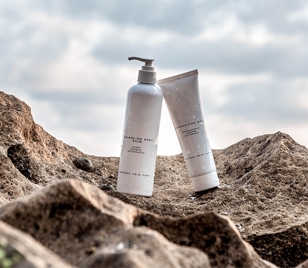

DEEP CLEAN, DEEP MOIST
선인장 시드 오일이 순하게 메이크업 및 노폐물을 녹여주고
촉촉하고 풍성한 버블로 산뜻한 세정이 가능한 클렌징 듀오
선인장 시드 오일이 순하게 메이크업 및 노폐물을 녹여주고
촉촉하고 풍성한 버블로 산뜻한 세정이 가능한 클렌징 듀오
지울수록 촉촉해지는 클렌징 루틴

선크림, 파운데이션과 같은 베이스 제품부터 립, 아이 제품까지 빠르고 깔끔하게 지워줍니다.
풍성한 버블이 피부 위로 밀착되어
산뜻하고 부드러운 롤링감으로 모공을 막지 않으며
클렌징 중 생길 수 있는 피부 자극을 최소화합니다.
선인장 시드 오일을 포함한 다양한 식물성 오일이
보습막을 형성하고 딥 클렌징 후에도
피부 수분을 잃지 않도록 해줍니다.
이런 고민을 가진 분들께 추천합니다.

모공까지 깨끗하게 세척해주는
산뜻한 클렌징을 찾는 고객
베이스, 포인트 메이크업을
한번에 지워내고 싶은 고객

모공까지 깨끗하게 세척해주는
산뜻한 클렌징을 찾는 고객

모공까지 깨끗하게 세척해주는
산뜻한 클렌징을 찾는 고객
| 제품명 | 딥 클린 딥 모이스트 | 용량 | 200ml |
| 판매가격 | 43,000원 | 제조국 | 대한민국 |
| 사용기한 | 제품별도표기 | 제품주요사항 | 모든피부타입 |